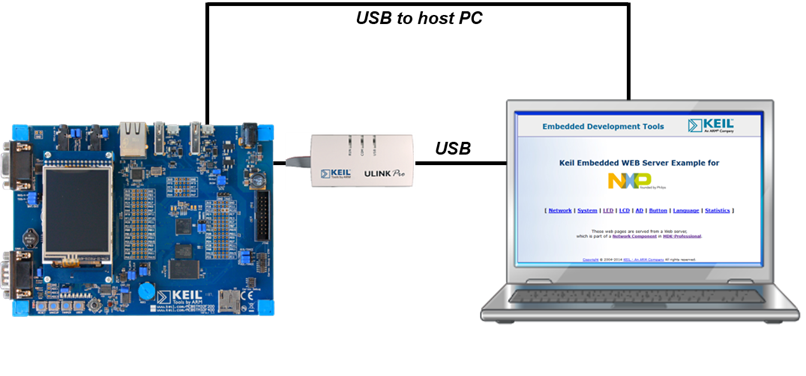
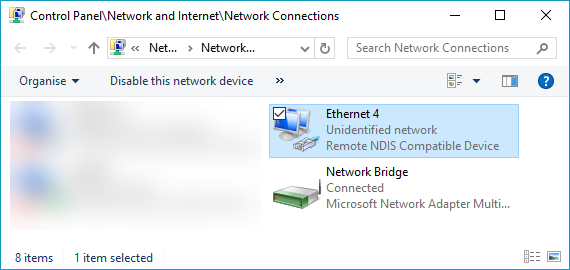
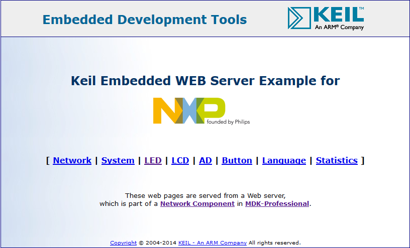

This example does not work out-of-the-box. You need to copy a network example for your development board using Pack Installer. Then, you need to change some settings and add user code, to be able to connect your network enabled device to a Windows hosts using USB.
- Note
- The following description is based on the HTTP Server for a MCB1800 development board.
The following picture shows an exemplary connection of the development board (in this case a MCB1800) to a host PC.

Create the "USB Web Server" project
- Copy the HTTP Server example using Pack Installer
- Change following settings in RTE:
- Disable CMSIS Driver:Ethernet MAC (API)
- Disable CMSIS Driver:Ethernet PHY (API)
- Enable CMSIS Driver:Ethernet (API):RNDIS
- Enable an appropriate CMSIS Driver:USB Device (API)
- Set USB:Device = 1
- Enable USB:CORE (in the Release variant)
- Set USB:Device:CDC = 1
- Enable the selected USB port in RTE_Device.h or using external tools (for example STM32CubeMX for STMicroelectronics devices)
- Disable the Ethernet port in RTE_Device.h or using external tools (for example STM32CubeMX for STMicroelectronics devices)
- Add a user code template to your sources (right-click on Source group in Project window -> Add New Item to Group 'Source' -> User Code Template -> USB:USB Device:CDC: USB Device CDC ACM RNDIS Virtual Ethernet -> Add)
- Disable DHCP in network settings (open Network:Net_Config_ETH_0.h and disable Dynamic Host Configuration)
- Open USB:USBD_Config_0.c and check/change settings:
- Set the correct hardware driver interface number
- Enable high-speed operation (if available)
- Device Settings:
- Max Endpoint 0 Packet Size = 64 Bytes
- Product ID = set to required (if you are using Windows 7, set it to 0x3709 for Keil MCB boards)
- Microsoft OS Descriptors Settings:OS String = enable
- Open USB:USBD_Config_CDC_0.h and check/change settings:
- USB Device: Communication Device Class (CDC) 0:
- Communication Class Subclass = Abstract Control Model (ACM)
- Communication Class Protocol = Vendor-specific (RNDIS)
- Interrupt Endpoint Settings:
- Endpoint Settings:
- Full/Low-speed:
- Maximum Endpoint Packet Size In bytes) = 16
- High-speed:
- Maximum Endpoint Packet Size In bytes) = 16
- Bulk Endpoint Settings:
- Endpoint Settings:
- Full/Low-speed:
- Maximum Endpoint Packet Size In bytes) = 64
- High-speed:
- Maximum Endpoint Packet Size In bytes) = 512
- Communication Device Class Settings: Abstract Control Model Settings:
- Communication Class Interface String = USB Remote NDIS6 based Device
- Call Management Capabilities:
- Call Management channel = Communication Class Interface only
- Device Call Management handling = None
- Abstract Control Management Capabilities:
- Maximum Communication Device Send Buffer Size = 2048
- Maximum Communication Device Receive Buffer Size = 2048
- If RTX v5 is used no changes to RTX settings are necessary as all resources are allocated statically. If RTX v4 is used you need to change following settings in file:
- Increase Number of concurrent running user threads by 3
- Increase Number of threads with user-provided stack size by 3
- Increase Total stack size [bytes] for threads with user-provided stack size by 2048
- Add this include to the main module:
- Add these lines of code to the HTTP_Server.c module before endless loop in
main or app_main function:
Build the project and download to the target.
Using the "USB Web Server" project
Hardware Setup
- Verify all jumper settings on the target hardware.
- Connect the development board to a host PC attaching a Micro-USB cable to the USB0 port.
- Make sure that the board is not powered using this USB port. An external power supply is recommended.
- After the device is recognized on the Windows PC:
- If the high-speed port is used, the driver should install on Windows 7 and later automatically
- If not, please use the provided .inf file from the USB RNDIS example (for example for MCB4300 evaluation board), but change .inf file Product ID according to one set in USBD_Config_0.c file
- Set your computer's IP address to 192.168.0.101 to match the settings of the embedded device:
- Go to Control Panel -> Network and Sharing Center -> Change Adapter Settings
- Right-click on Local Area Connection n (Remote NDIS56 based Device):

- Select properties -> Internet Protocol Version 4 (TCP/IPv4) properties and use the following address:
- IP address: 192.168.0.101
- Subnet mask: 255.255.255.0 OK and close all dialogs
- Open a web browser and enter the address 192.168.0.100
- Use "admin" without a password to log in:
